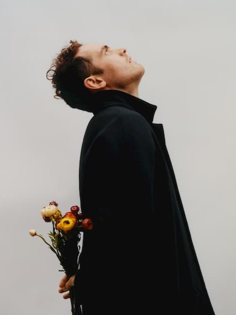
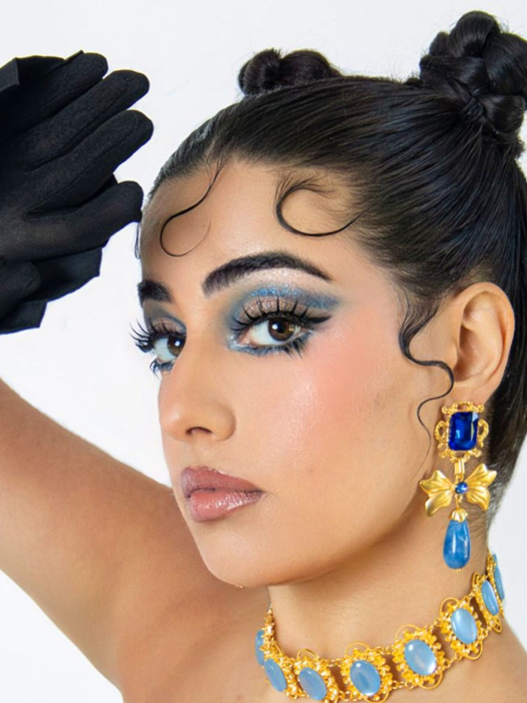
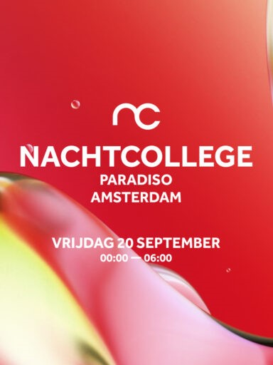
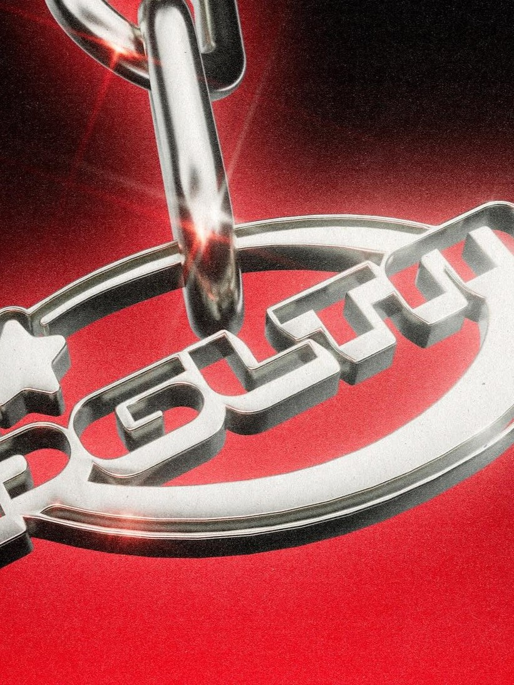

Paradiso
56 jaar concerten, clubnachten en cultuur
Programma
Vandaag
-

Jordan Rakei + Dhruv
In Paradiso
Aanvang 19:30
-

Woman-Life-Freedom by Nieloefaar
In Paradiso
Aanvang 20:00
-

Nachtcollege
In Paradiso
Aanvang 23:59
-

Pretty Girls Like Trap Music (WOMEN+ Only)
In Parallel
Aanvang 23:59
Vr. 6 sep
-
Jordan Rakei
uitverkocht
Alternatieve pop, triphop en jazz
-
The Lemon Twigs + Tchotchke
Uitverkocht
Twee broers uit New York die inspiratie putten uit de jaren '60 en '70 / Tolhuistuin
-
Opening Party GLUE 2024
20:15
Design-tour door de Amsterdamse creatieve gemeenschap
Za. 7 sep
-
Pretenders + The Picturebooks
uitverkocht
Invloedrijke rockband onder leiding van frontvrouw Chrissie Hynde
-
Tommy Lefroy + Philine
19:30
Indierockduo gevestigd in Londen / Tolhuistuin
-
Word Up x Unwanted Words
19:30
Avond met spoken word en een open mic